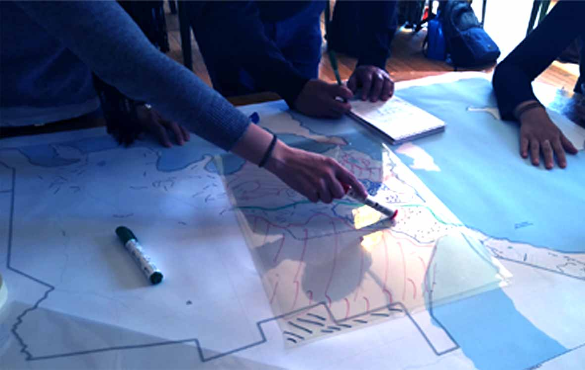
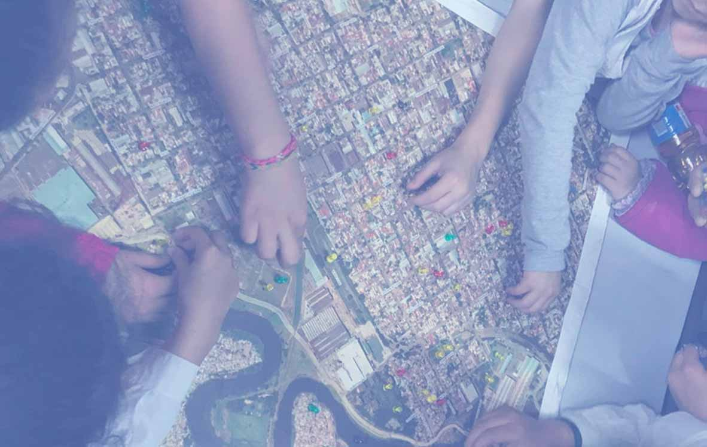

Entendemos a la misma como un proceso de construcción de mapas donde se combina el conocimiento local con información y tecnología geográfica para crear mayor entendimiento de las relaciones entre una comunidad y su territorio (Chambers 2006; Gil Grandett y Gómez Ayola 2019).
Desde el IGN nos acercamos a la CP con el objetivo de acompañar el proceso de producción y publicación de la información resultante de diversas experiencias de mapeos participativos, y en un futuro comenzar a pensar de qué manera estos productos podrían fortalecer, complementar y enriquecer la información geoespacial oficial.
En esta sección se presentan dos proyectos que involucran técnicas de mapeo participativo para la gestión del riesgo de desastres, y en los cuales el IGN participa de manera colaborativa con otras instituciones. Por medio de la plataforma IG-GIRD hacemos disponible el trabajo relevado en campo. Esta sección está en constante actualización, ya que ambos proyectos se encuentran en desarrollo actualmente.

